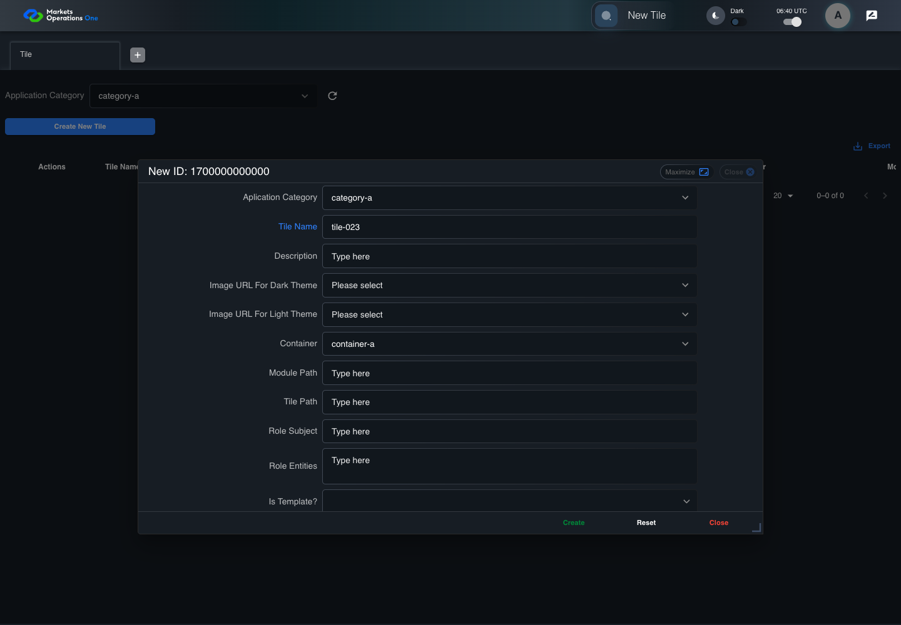
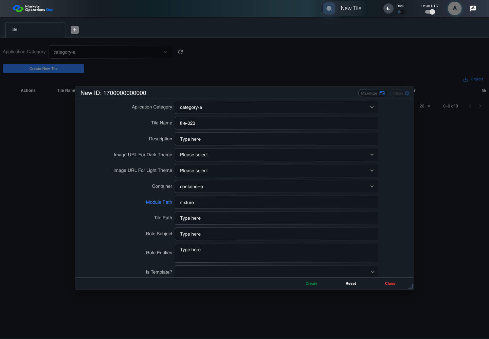

BFF-ADM-023 current BFF administration through actual UI
PASS · application/run-072/bff-adm-023-current-bff-administration-through-actual-ui-8fb1b99e9363-attempt-1 · ACTUAL_APPLICATION_LOCAL_SERVICES
Actual current React and exact-current BFF admin controllers/services/JPA with actual migration DDL in disposable PostgreSQL. Controlled OUD/EMS2 identities and local Spring bootstrap. Fixture SQL seeds/mutates isolated records; service errors are actual database errors. Undefined agreed messages remain unresolved acceptance.
2026-10-22T06:40:42.998Z to 2026-10-22T06:40:54.987Z
Assertions and result · Artifact manifest · Exact run inputs and source hashes
Result SHA-256:68ca9ae331d470a8d39ecc7005a6106939fe5974e36db5629e521ce472e9dd7aMachine observations
- actual-identity-projection.json
ad3b0123394f8f5cb24e83f7e0af44d05f8065a50ffc4b270ed1a264a0f6172c - baseline-inputs.json
708e240492a133ebaad768f77b3629a80b9cc35af1ffc639ff229f3053ab0e18 - bff-boundary.json
a32992cdea919d7153ea531b4629a00b19e7091d60ba179334ef7dde56e86ca8 - committed-ui-submission-comparisons.json
6f648b4953067ad2f6ca5b593bb426a4ad884d83339fda676ce0b3e44eee9ef0 - creation-clock.json
d0b936d5f9a67cdb387fcee596220b6f5420ff9afbdd3db0d983e64294f331e0 - fixture-step-10.json
48ff15fbaf4207b3d2ff898f769a49b5749c0f64b23ea0c67692d8d91039ba83 - fixture-step-11.json
9cf4550753cfef4a73a70a1bc60f4aec9548f8a73a74f763c05ec0c272abd34f - fixture-step-6.json
47c92627cda153b557c5420de8ac223ce82c3c11d575699eaddc6f0f4a8074c8 - fixture-step-7.json
bf4ad5d651bad5d61e2658f5c992c2f7c67c4ad0df1c800b1b78dc4f7ebdb46d - fixture-step-8.json
e341f563517b4b4c1663ac9d05ab299241e17e535c78f86c6c997dc7f55de4c6 - fixture-step-9.json
8cca3f6f01e2cf535c086205f1b17a38b381a2bcc6636688896278dd189b0e58 - initial-persisted-records.json
5eb323cb295e66fa815658ff2e28708823ad84ac59c52a1f4e88c2581fb190b2 - persisted-after-submit.json
1d6c4ee2e272b4e3347bc421fe6771bf855a065db9cd01cac3560e5099500444 - reference-snapshot-3.json
8660f3221b26cd48b6c59eaedbc57e3cb5e8b3ecc2e2da1cba52bcbccba1238e - reference-snapshot-4.json
ecb7f80f6d8ab71ea80e8f4a8882b310b659d90476479f64a2bef0a63dd61f38 - rejection-or-policy-observation.json
3c2600c7ea62abaef040e98186ebf47ced4c52594cf85c842aa6ac23b64395a3 - ui-origin-bff-requests.json
d4802a80152ad749310f095b7954047ba1d35392ec31fb7d75885e65bfd74196 - undefined-message-contract.json
3c72bde9692b577fc21bb58ab543c8b3d502225f1699c55544be220c5ef509b7
Screenshot capture: CAPTURED. Named frames: 25.
Step screenshot bindings: COMPLETE. 24/24 canonical steps have execution screenshots.
Bindings measure structural coverage only. They do not establish screenshot content quality or relevance.
Screenshot content review: NOT_REVIEWED. Recorded context: 0/25 frames. Identical image bytes: 0 repeated frames. Recorded context does not establish human visual review.
Canonical step timeline
Given Admin A uses subject "admin-a" with role "FMO_ADMIN" in an isolated authenticated browser
Execution: PASSED.
1. step-01 Visible state after step 1: Given Admin A uses subject "admin-a" with role "FMO_ADMIN" in an isolated authenticated browser
2026-10-22T06:40:45.921Z · 1440×1000
Step: /Users/lushevol/code/github/ratan-release-impact/workbench/tasks/ui-test-coverage-20261022/test-cases.md:15634
SHA-256:ec4d62b93d2f99420ef94e118ee21625dc7e03679011cda5cab66333492ee25eAnd the controlled Tile fixture records the initial grid rows and persisted values
Execution: PASSED.
2. step-02 Visible state after step 2: And the controlled Tile fixture records the initial grid rows and persisted values
2026-10-22T06:40:46.065Z · 1440×1000
Step: /Users/lushevol/code/github/ratan-release-impact/workbench/tasks/ui-test-coverage-20261022/test-cases.md:15635
SHA-256:747f1f3a55141956f62fdd96d3835012ac77e5380c856a0459aaa45816a45393And Category 101 has label "category-a" and Import Map 201 has Module Name "container-a"
Execution: PASSED.3. step-03 Visible state after step 3: And Category 101 has label "category-a" and Import Map 201 has Module Name "container-a"
2026-10-22T06:40:46.136Z · 1440×1000
Step: /Users/lushevol/code/github/ratan-release-impact/workbench/tasks/ui-test-coverage-20261022/test-cases.md:15636
SHA-256:f6fbe917cb124cef8699cb85549ecb86ac9efcee572c12a8995298e65a7200aeAnd both references belong to "FMO_ADMIN" and the Tile page category filter value is Category 101
Execution: PASSED.
4. step-04 Visible state after step 4: And both references belong to "FMO_ADMIN" and the Tile page category filter value is Category 101
2026-10-22T06:40:46.202Z · 1440×1000
Step: /Users/lushevol/code/github/ratan-release-impact/workbench/tasks/ui-test-coverage-20261022/test-cases.md:15637
SHA-256:bff2fbbb8991f1809a0dc491436c1c3b9b6bf5bb09156bb382105182dcbfe3deAnd the controlled creation clock returns 1700000000000 milliseconds
Execution: PASSED.
5. step-05 Visible state after step 5: And the controlled creation clock returns 1700000000000 milliseconds
2026-10-22T06:40:46.253Z · 1440×1000
Step: /Users/lushevol/code/github/ratan-release-impact/workbench/tasks/ui-test-coverage-20261022/test-cases.md:15638
SHA-256:aeccd798f7b1c74721cf035f62d6803748d226e36a6f8e5e74ef910882a6db9cAnd the baseline fixture data defines "Tile Name" as "tile-023"
Execution: PASSED.6. step-06 Visible state after step 6: And the baseline fixture data defines "Tile Name" as "tile-023"
2026-10-22T06:40:46.330Z · 1440×1000
Step: /Users/lushevol/code/github/ratan-release-impact/workbench/tasks/ui-test-coverage-20261022/test-cases.md:15639
SHA-256:cb2f83fd9df6875d821a218c49efe7d37c3406ef3eea1e598689e2d4219f4703And the baseline fixture data defines "Module Path" as "/fixture"
Execution: PASSED.
7. step-07 Visible state after step 7: And the baseline fixture data defines "Module Path" as "/fixture"
2026-10-22T06:40:46.397Z · 1440×1000
Step: /Users/lushevol/code/github/ratan-release-impact/workbench/tasks/ui-test-coverage-20261022/test-cases.md:15640
SHA-256:f2ae741beb67793ab3c740a7b011f51f6f0a0d2561c8ef428ab2f04107c6f581And the baseline fixture data defines "Tile Path" as "/case-023"
Execution: PASSED.
8. step-08 Visible state after step 8: And the baseline fixture data defines "Tile Path" as "/case-023"
2026-10-22T06:40:46.505Z · 1440×1000
Step: /Users/lushevol/code/github/ratan-release-impact/workbench/tasks/ui-test-coverage-20261022/test-cases.md:15641
SHA-256:14267d4c96e684044c7dd00f74cf37d6429e4f3235ba3ca7d4f27c0979df5fb6And the baseline fixture data defines "Role Entities" as "E-TRADE"
Execution: PASSED.
9. step-09 Visible state after step 9: And the baseline fixture data defines "Role Entities" as "E-TRADE"
2026-10-22T06:40:46.597Z · 1440×1000
Step: /Users/lushevol/code/github/ratan-release-impact/workbench/tasks/ui-test-coverage-20261022/test-cases.md:15642
SHA-256:02365b1bb6ad09443f8a82ee6be1125f93fd4c62168329d8e67811d50b97b61eAnd the baseline fixture data defines "Filter Rule" as ""
Execution: PASSED.
10. step-10 Visible state after step 10: And the baseline fixture data defines "Filter Rule" as ""
2026-10-22T06:40:46.680Z · 1440×1000
Step: /Users/lushevol/code/github/ratan-release-impact/workbench/tasks/ui-test-coverage-20261022/test-cases.md:15643
SHA-256:f00aecbef034c8519074a0e27c7a823681038054376cbe1894324a2f864376c0And the baseline Tile references use "Aplication Category" "category-a" and "Container" "container-a"
Execution: PASSED.
11. step-11 Visible state after step 11: And the baseline Tile references use "Aplication Category" "category-a" and "Container" "container-a"
2026-10-22T06:40:46.757Z · 1440×1000
Step: /Users/lushevol/code/github/ratan-release-impact/workbench/tasks/ui-test-coverage-20261022/test-cases.md:15644
SHA-256:7b81db55b3071bedd4e581f7ea66df4c2acd585c8476ca5414dc8ef7fbb64804When Admin A clicks the button labeled "Create New Tile" on the Tile administration page
Execution: PASSED.
12. step-12 Visible state after step 12: When Admin A clicks the button labeled "Create New Tile" on the Tile administration page
2026-10-22T06:40:47.816Z · 1440×1000
Step: /Users/lushevol/code/github/ratan-release-impact/workbench/tasks/ui-test-coverage-20261022/test-cases.md:15645
SHA-256:4e4d851e2e75246d330ba4c3e683072b9d4be796a8185baaae808be1b0c5632bThen the dialog titled "new ID: 1700000000000" is visible on the Tile administration page
Execution: PASSED.
13. step-13 Visible state after step 13: Then the dialog titled "new ID: 1700000000000" is visible on the Tile administration page
2026-10-22T06:40:48.627Z · 1440×1000
Step: /Users/lushevol/code/github/ratan-release-impact/workbench/tasks/ui-test-coverage-20261022/test-cases.md:15646
SHA-256:a07d84a7befd4c0fe227439a672f0380f45b612f784dfd69e4dcf80be92286ffWhen Admin A clicks the combobox labeled "Container" in dialog "new ID: 1700000000000"
Execution: PASSED.
14. step-14 Visible state after step 14: When Admin A clicks the combobox labeled "Container" in dialog "new ID: 1700000000000"
2026-10-22T06:40:48.936Z · 1440×1000
Step: /Users/lushevol/code/github/ratan-release-impact/workbench/tasks/ui-test-coverage-20261022/test-cases.md:15647
SHA-256:646d332d9152c7d1aefb86bd8e313ffdabe6f59ed9a09eeb3813ab628cef7059And Admin A clicks the option labeled "container-a" in the expanded "Container" listbox for dialog "new ID: 1700000000000"
Execution: PASSED.
15. step-15 Visible state after step 15: And Admin A clicks the option labeled "container-a" in the expanded "Container" listbox for dialog "new ID: 1700000000000"
2026-10-22T06:40:49.445Z · 1440×1000
Step: /Users/lushevol/code/github/ratan-release-impact/workbench/tasks/ui-test-coverage-20261022/test-cases.md:15648
SHA-256:897d05b39487b50fdd49a347c237dbcc053732fa2f148e8a349934e902b8f7d5And Admin A fills the textbox labeled "Tile Name" with "tile-023" in dialog "new ID: 1700000000000"
Execution: PASSED.
16. step-16 Visible state after step 16: And Admin A fills the textbox labeled "Tile Name" with "tile-023" in dialog "new ID: 1700000000000"
2026-10-22T06:40:49.973Z · 1440×1000
Step: /Users/lushevol/code/github/ratan-release-impact/workbench/tasks/ui-test-coverage-20261022/test-cases.md:15649
SHA-256:af9a301702bee7b8615fec793e0d5c2f8370f0071f618dec1d8942b9f1ff7b1dAnd Admin A fills the textbox labeled "Module Path" with "/fixture" in dialog "new ID: 1700000000000"
Execution: PASSED.
17. step-17 Visible state after step 17: And Admin A fills the textbox labeled "Module Path" with "/fixture" in dialog "new ID: 1700000000000"
2026-10-22T06:40:50.540Z · 1440×1000
Step: /Users/lushevol/code/github/ratan-release-impact/workbench/tasks/ui-test-coverage-20261022/test-cases.md:15650
SHA-256:d772a860f7b755e4109f1e8cb69169aef6da1148cdb03afda65454c63fda9dc4And Admin A fills the textbox labeled "Tile Path" with "/case-023" in dialog "new ID: 1700000000000"
Execution: PASSED.18. step-18 Visible state after step 18: And Admin A fills the textbox labeled "Tile Path" with "/case-023" in dialog "new ID: 1700000000000"
2026-10-22T06:40:51.771Z · 1440×1000
Step: /Users/lushevol/code/github/ratan-release-impact/workbench/tasks/ui-test-coverage-20261022/test-cases.md:15651
SHA-256:0b1481a529ef8a1255f1b8214dce2486aace2465fb5f2290d83e76c44b7586a1And Admin A fills the textarea labeled "Role Entities" with "E-TRADE" in dialog "new ID: 1700000000000"
Execution: PASSED.19. step-19 Visible state after step 19: And Admin A fills the textarea labeled "Role Entities" with "E-TRADE" in dialog "new ID: 1700000000000"
2026-10-22T06:40:52.345Z · 1440×1000
Step: /Users/lushevol/code/github/ratan-release-impact/workbench/tasks/ui-test-coverage-20261022/test-cases.md:15652
SHA-256:cdcd7dc14b722eaf89930045552945a4d9172d67e26e409fb986cee7be523f27And Admin A fills the textarea labeled "Filter Rule" with "null" in dialog "new ID: 1700000000000"
Execution: PASSED.20. step-20 Visible state after step 20: And Admin A fills the textarea labeled "Filter Rule" with "null" in dialog "new ID: 1700000000000"
2026-10-22T06:40:52.864Z · 1440×1000
Step: /Users/lushevol/code/github/ratan-release-impact/workbench/tasks/ui-test-coverage-20261022/test-cases.md:15653
SHA-256:e266311dbe0602dc0e7fe2b6ff493dde940b89c6c560dbce6a5389883c79caf7And Admin A clicks the button labeled "Create" in dialog "new ID: 1700000000000"
Execution: PASSED.21. step-21 Visible state after step 21: And Admin A clicks the button labeled "Create" in dialog "new ID: 1700000000000"
2026-10-22T06:40:53.288Z · 1440×1000
Step: /Users/lushevol/code/github/ratan-release-impact/workbench/tasks/ui-test-coverage-20261022/test-cases.md:15654
SHA-256:593adcb54eb63af82d0160ab7fd0525dbdd962dfd3560328e9bda81879754b2aThen the dialog titled "new ID: 1700000000000" remains visible on the Tile administration page
Execution: PASSED.22. step-22 Visible state after step 22: Then the dialog titled "new ID: 1700000000000" remains visible on the Tile administration page
2026-10-22T06:40:53.423Z · 1440×1000
Step: /Users/lushevol/code/github/ratan-release-impact/workbench/tasks/ui-test-coverage-20261022/test-cases.md:15655
SHA-256:a776440b91563196896219860d550bddca5a5b009874f341c038c52f7af74f9aAnd the alert with severity "error" in the portal snackbar displays the captured rejection response message
Execution: PASSED.23. step-23 Visible state after step 23: And the alert with severity "error" in the portal snackbar displays the captured rejection response message
2026-10-22T06:40:53.580Z · 1440×1000
Step: /Users/lushevol/code/github/ratan-release-impact/workbench/tasks/ui-test-coverage-20261022/test-cases.md:15656
SHA-256:a89d59f44c3cb6c8292f8c079a3dcb6e27d10524985527c5c529a9ef35c77e69And the Tile data grid with column "Record Id" row identifiers and loaded field values equal the initial grid snapshot on the Tile administration page
Execution: PASSED.24. step-24 Visible state after step 24: And the Tile data grid with column "Record Id" row identifiers and loaded field values equal the initial grid snapshot on the Tile administration page
2026-10-22T06:40:53.756Z · 1440×1000
Step: /Users/lushevol/code/github/ratan-release-impact/workbench/tasks/ui-test-coverage-20261022/test-cases.md:15657
SHA-256:edb83ac6e177c67d1cb6ff8f2bec4186e175f1824997ff8b3829742b41f1c196
Additional named frames
Screenshots establish visible state only. Assertions and traces support functional claims.